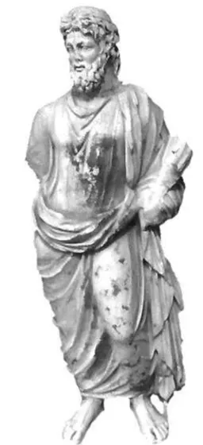

Entity Grimoire
 Hades
Hades
Domains & Sacred Objects
- Death
The Taking of Persephone
Hades' most far-reaching myth is the seizing of Persephone. As she gathered flowers he opened the ground beneath her feet and drew her down into his realm to reign beside him. Her mother Demeter, goddess of agriculture, withdrew her gifts from the land in grief, and the bargain that followed bound Persephone to the Underworld for part of every year because she had eaten his pomegranate seeds. The turning seasons were said to follow this arrangement: the months of her absence are the barren ones, and her return brings the spring. From the grief and reunion at the center of this story grew the Eleusinian Mysteries, the great rites of death and rebirth kept at Eleusis.
Role in Hellenic Household Worship

Within the household pattern of offerings, Plouton receives the cypress tree, the pitchfork, pomegranate, daffodil, and incense of styrax and dried laurel leaves. His tokens are the sceptre, the chariot, the throne, and the key. His colours are white and black. The owl stands as His sacred animal in Roman sources, and the poplar, mint, daffodil, and cypress tree among His sacred plants.